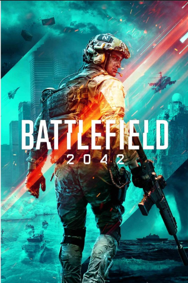

Select A Battlefield!
Select A Game Down Below!
Summary
"Battlefield 2042," released in 2021, is a futuristic first-person shooter set in a world plagued by climate change and global conflict. With matches supporting up to 128 players, players join two factions battling for control over vital resources. The game introduces dynamic weather events and a specialist system for unique abilities. Featuring modes like Conquest and Breakthrough, it aims to deliver large-scale, adrenaline-fueled multiplayer battles amidst a visually stunning, near-future setting.
More Detail
"Battlefield 2042" represents a bold leap forward for the franchise, immersing players in a near-future world where climate change and geopolitical tensions have escalated into all-out warfare. Set in the year 2042, the game presents a world divided by chaos and strife, with nations collapsing and resources dwindling, leading to a struggle for survival among competing factions. The game offers a vast and dynamic multiplayer experience, supporting matches with up to 128 players on PC and next-generation consoles, providing an unprecedented scale of warfare. Players can choose to align with one of two factions: Task Force 2042, composed of the remnants of traditional military forces, and the No-Pat Specialists, rogue operators fighting for their own interests amidst the chaos. One of the most striking features of "Battlefield 2042" is its dynamic and ever-changing environments. Players must contend with extreme weather events such as tornadoes, sandstorms, and blizzards that can sweep across the battlefield, altering the terrain and forcing players to adapt their strategies on the fly. These dynamic elements add an extra layer of unpredictability and excitement to the gameplay, making each match feel unique and dynamic. The game introduces a new specialist system, where players can choose from a diverse roster of characters, each with their own unique abilities and traits. These specialists offer distinct playstyles and tactical advantages, allowing players to customize their approach to combat and excel in their chosen roles on the battlefield. "Battlefield 2042" features a range of multiplayer modes catering to different preferences and playstyles. Conquest mode returns as the flagship experience, where teams compete to capture and hold key objectives on sprawling maps. Breakthrough mode focuses on intense, linear battles with attackers pushing forward to capture or defend objectives. Additionally, Hazard Zone offers a tense, squad-based experience with a focus on risk and reward gameplay. One of the most innovative additions to "Battlefield 2042" is Battlefield Portal, a mode that allows players to create and share their own custom game modes and experiences. This feature enables players to remix classic Battlefield maps, weapons, and vehicles from previous titles, offering endless possibilities for creativity and community-driven content. Despite facing some initial technical challenges and mixed reviews at launch, "Battlefield 2042" continues to evolve with ongoing updates and support from the developers. With its ambitious vision, stunning visuals, and adrenaline-fueled gameplay, "Battlefield 2042" aims to deliver a thrilling and immersive multiplayer experience that pushes the boundaries of the franchise.